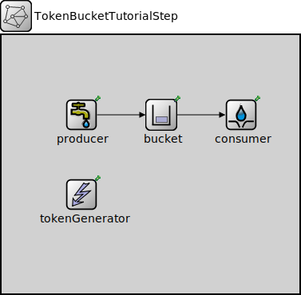

Package: inet.tutorials.queueing
TokenBucketTutorialStep
network(no description)
Usage diagram
The following diagram shows usage relationships between types. Unresolved types are missing from the diagram.
Properties
| Name | Value | Description |
|---|---|---|
| isNetwork |
Unassigned submodule parameters
| Name | Type | Default value | Description |
|---|---|---|---|
| producer.displayStringTextFormat | string | "created %p pk (%l)" |
determines the text that is written on top of the submodule |
| producer.packetNameFormat | string | "%a-%c" |
see directives in module documentation |
| producer.packetRepresentation | string | "byteCount" |
determines the chunk of the packet data |
| producer.packetProtocol | string | "unknown" | |
| producer.packetLength | int | ||
| producer.packetData | int | -1 | |
| producer.attachCreationTimeTag | bool | true | |
| producer.attachIdentityTag | bool | true | |
| producer.attachDirectionTag | bool | true | |
| producer.clockModule | string | "" |
relative path of a module that implements IClock(1,2); optional |
| producer.initialProductionOffset | double | -1s |
initial duration before which packets are not produced. When negative, then produce packet in initialize() |
| producer.productionInterval | double |
elapsed time between subsequent packets pushed to the connected packet consumer |
|
| producer.scheduleForAbsoluteTime | bool | true |
when a clock is used relative means that setting the clock will not affect the simulation time of the event |
| consumer.displayStringTextFormat | string | "received %p pk (%l)" |
determines the text that is written on top of the submodule |
| consumer.clockModule | string | "" |
relative path of a module that implements IClock(1,2); optional |
| consumer.initialConsumptionOffset | double | 0s |
initial duration before which packets are not consumed |
| consumer.consumptionInterval | double | 0s |
elapsed time between subsequent packets allowed to be pushed by the connected packet producer, 0 means any number of packets can be pushed at the same simulation time |
| consumer.scheduleForAbsoluteTime | bool | true |
when a clock is used relative means that setting the clock will not affect the simulation time of the event |
| tokenGenerator.displayStringTextFormat | string | "generated %t tk\nto %s" |
determines the text that is written on top of the submodule |
| tokenGenerator.clockModule | string | "" |
relative path of a module that implements IClock(1,2); optional |
| tokenGenerator.generationInterval | double |
time interval between two subsequent token generation events |
|
| tokenGenerator.numTokens | double | 1 |
number of tokens generated repeatedly |
Source code
network TokenBucketTutorialStep { submodules: producer: ActivePacketSource { @display("p=100,100"); } bucket: TokenBucket { @display("p=200,100"); } consumer: PassivePacketSink { @display("p=300,100"); } tokenGenerator: TimeBasedTokenGenerator { @display("p=100,200"); storageModule = "^.bucket.server"; } connections allowunconnected: producer.out --> bucket.in; bucket.out --> consumer.in; } //-------------------------------------------------File: tutorials/queueing/QueueingTutorial.ned
 This documentation is released under the Creative Commons license
This documentation is released under the Creative Commons license